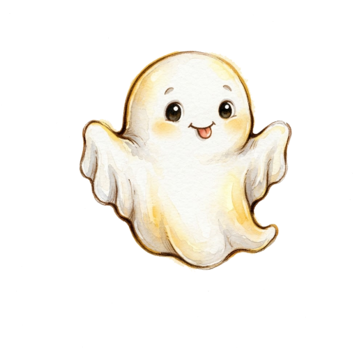

가장 높은 곳에서,
꽃이 졌다.
수천 개의 플래시가
날 향하던 그 밤,
나는 꼭대기에 있었다.
누구보다 찬란했던 그 순간부터—
어쩌면 끝은 이미
정해져 있었는지도 모른다.
낙화
떨어지는 꽃
상상의문 수원 2호점
추리 · 난이도 2/5 · 공포도 4/5
12세 미만은 이용할 수 없는 테마(매장 공식 안내)

다녀왔다면
한 줄 기록
줄거리·후기는 프로필 링크 · talkkaknote.com